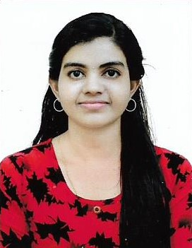

+91 8848068661
dsdivakar98@gmail.com
Kerala, India
CAREER OBJECTIVE
To work in a firm with a professional work driven
environment where I can utilize and apply my knowledge,
skills which would enable me as a fresh graduate
to grow while fulfilling organizational goals.
BASIC ACADEMIC CREDENTIALS
B.tech (Electronics and Communication Engineering)
APJ Abdul Kalam Technological
University(2016-2020)-scored: 70%
Higher Secondary
Kerala State Board
Kanikkamatha Convent EMGHSS (2016) -scored:91%
High School
Kerala State Board
Kanikkamatha Convent EMGHSS
(2014)-scored:95%
EXPERIENTIAL LEARNING (SUMMER INTERNSHIP PROGRAM)
- Company Name :- Keltron REC
Internship :- Electronic Product Development
During :- June 2017
Period of Program :- 10 days
- Company Name :- Livewire
Internship :- IoT
During :- July 2018
Period of Program :- 10 days